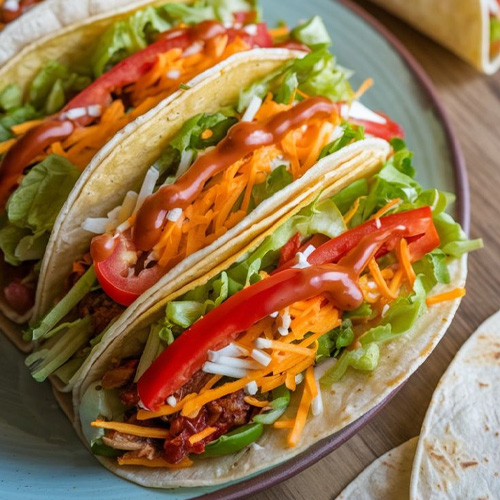
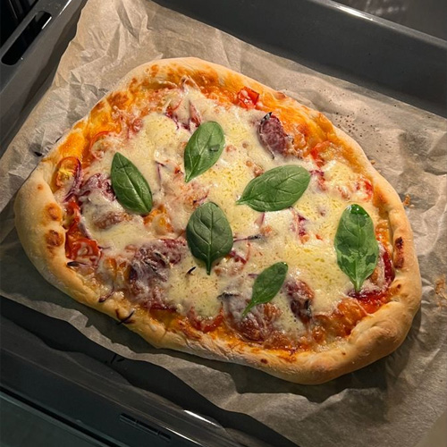

25 min | 2 personas
Tacos de verdura
Masa flexible de maíz y fécula que no se rompe al doblarla, rellena de...
Ver recetaSoy quien está detrás de Hadita Sin Tacc. Este proyecto nació debido a la intención de juntar en un solo lugar recetas para personas celíacas o que simplemente quieren cuidarse mejor en su alimentación.
Acá vas a poder encontrar recetas libres de gluten, así como también sin azúcares refinados o con ellos (podés distinguirlos por los sellitos de la página)
Espero que te guste tu visita por la web!
Nuestras recetas favoritas para que las pruebes y las disfrutes.

25 min | 2 personas
Masa flexible de maíz y fécula que no se rompe al doblarla, rellena de...
Ver receta40 min | 4 personas
Una receta típica con fécula de mandioca pura y doble, con la posibilidad...
Ver receta
45 min | 4 personas
Una típica comida pero con masa libre de glúten, leudada lentamente logrando...
Ver recetaPodés diferenciarlas por estos marcadores en la web, ubicados en la esquina superior derecha.
Recetas que no contienen azúcares refinados, pero sí pueden contener endulzantes naturales.
Recetas que si contienen azúcares refinados, manteniendo la total inocuidad libre de gluten.